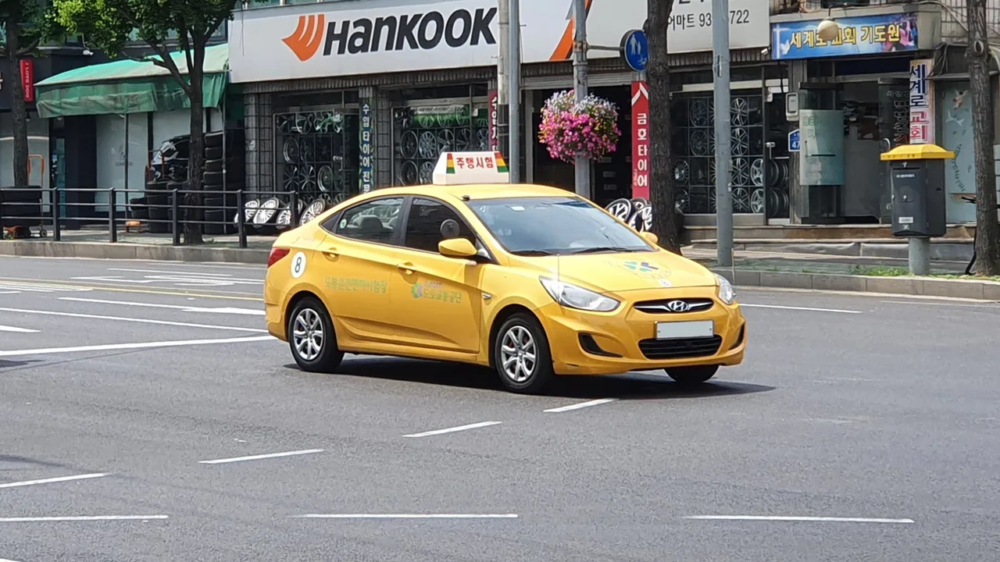
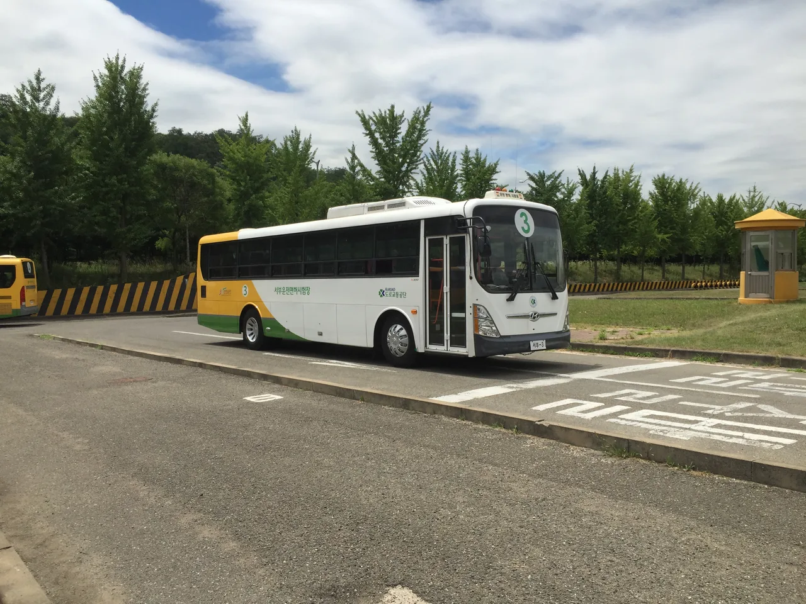

▲ 카드 한 장 값이 100만 원을 넘어섰다. 운전면허가 '가장 비싼 신분증'이라 불리는 이유다 ⓒ Wikimedia Commons

▲ 도봉운전면허시험장 소속 주행시험 차량. 시험 자체는 그대로지만, 여기까지 오는 비용이 예전과 다르다 ⓒ Wikimedia Commons
1. 결론부터 — 면허 하나 따는 데 얼마나 드나
운전면허 전문학원 기준 1종 보통 수강료는 약 89만 800원, 2종 자동은 89만 1,300원 수준입니다. 여기에 필기시험 응시료, 기능시험 응시료, 도로주행시험 응시료가 별도로 붙고, 첫 시험에서 떨어져 재응시하거나 도로연수를 6시간 추가로 받으면 총비용은 120만 원대까지 올라갑니다. 학원을 거치지 않고 개인 연습으로 독학 응시하는 방법도 있지만, 이 경우에도 도로주행 연습을 위한 개인 강습비가 별도로 들어 결과적으로 큰 차이가 나지 않는 경우가 많습니다.
📍 핵심 요약
기본 과정(1종 보통): 약 89만 원 · 도로연수 추가: 최대 120만 원대 · 소요 기간: 모든 시험을 한 번에 통과하면 2~3주
차량 가격이 아니라 면허 하나를 따는 데 드는 비용이 100만 원 안팎이라는 점이 문제입니다. 실제로 차를 살 계획이 없는 사람에게 운전면허는 이동 수단을 위한 자격이라기보다, 100만 원을 들여 만드는 또 하나의 신분증에 가까워지고 있다는 지적이 나옵니다.
2. 왜 이렇게 비싸졌나 — 학원은 줄고, 연수는 늘었다
가장 직접적인 원인은 운전면허 전문학원 수 자체가 크게 줄었다는 점입니다. 서울에서 자체 기능시험을 운영하는 전문학원은 1996년 26곳에서 현재 8곳까지 줄었고, 전국적으로도 568곳에서 330곳으로 감소했습니다. 학원이 줄어든 만큼 지역별로 가격 경쟁이 약해지고, 남은 학원들이 수강료를 올릴 여지가 커졌습니다.
두 번째 원인은 도로연수 비중이 커졌다는 점입니다. 기본 교육과정만으로 도로주행시험에 합격하기 어렵다고 느끼는 응시생이 늘면서, 6시간 안팎의 도로연수를 추가로 받는 경우가 일반적인 코스가 됐습니다. 이 추가 연수 비용만 따로 30만 원 안팎이 붙어, 총액을 100만 원 이상으로 밀어 올리는 주된 요인이 됩니다.

▲ 서부운전면허시험장의 1종 대형 시험차량. 시험장 운영비와 응시료도 매년 소폭씩 오르고 있다 ⓒ Wikimedia Commons
세 번째는 저가 미등록 방문연수의 부작용입니다. 정식 학원보다 싼 개인 강사의 '방문연수'를 택하는 응시생도 늘고 있지만, 이런 차량 상당수는 보조 브레이크 등 안전장치가 없어 사고 위험이 크다는 문제도 함께 제기됩니다. 결국 안전을 고려하면 정식 학원 비용을 감수할 수밖에 없는 구조입니다.
3. 실제로 얼마나 포기했나 — 4년 새 65만 명 감소
비용 부담은 통계로도 확인됩니다. 29세 이하 운전면허 소지자는 2021년 519만 7,025명에서 2025년 454만 418명으로, 4년 만에 65만 명 넘게(약 12.6%) 줄었습니다. 같은 기간 학원 수 감소와 맞물려 나타난 변화입니다.
| 연도 | 29세 이하 면허 소지자 | 전년 대비 |
|---|---|---|
| 2021년 | 약 519만 7,025명 | - |
| 2025년 | 약 454만 418명 | 4년간 약 65만 6,607명 감소(-12.6%) |
청년들이 면허 취득을 미루는 핵심 이유는 단순합니다. "당장 차를 살 계획이 없는데 면허부터 따야 하나"라는 실질적인 고민입니다. 자동차 구매 자체가 월세·생활비 부담으로 뒤로 밀리는 상황에서, 그 앞 단계인 면허 취득까지 함께 연기되는 악순환이 나타나고 있습니다. 실제로 취업 준비 과정에서 면허가 필요해지는 시점에야 부랴부랴 취득에 나서는 경우가 많다는 게 업계 관계자들의 공통된 설명입니다.
4. 그래서 나온 대책 — 2026년 청년 운전면허 지원금
비용 부담이 사회 문제로 떠오르자, 전국 지방자치단체들이 청년의 이동권과 구직 활동을 돕기 위한 운전면허 취득 지원 사업을 확대하고 있습니다. 다만 지원금은 국가 단위 공통 제도가 아니라 지자체별 자체 예산으로 운영되는 만큼, 거주 지역에 따라 지원 규모와 조건이 크게 다릅니다.
| 지역 | 지원금액 | 비고 |
|---|---|---|
| 경남 의령군 등 일부 군 단위 | 최대 50만~70만 원 | 전국 최고 수준 |
| 경남 김해시 | 최대 50만 원 | 18~45세 미취업 청년, 수강료·응시료의 60% |
| 경기도 내 다수 시·군 | 30만~50만 원 | 성남시는 저소득·취약계층 상한 최대 50만 원 |
| 서울·인천 | 10만~20만 원 | 시험 응시료 실비 중심 차등 지원 |
공통 신청 자격은 대체로 만 18~39세(지역에 따라 45세까지) 미취업 청년이며, 신청 지역에 주민등록이 돼 있어야 합니다. 필요 서류는 운전면허증 사본, 학원 수강료 결제 영수증, 시험 응시·합격 확인서, 건강보험 자격득실확인서, 본인 명의 통장 사본, 주민등록초본 등이 일반적입니다. 서울은 '서울청년포털 청년몽땅정보통', 경기는 '경기청년포털' 또는 '잡아바' 애플리케이션을 통해 비대면으로 신청할 수 있고, 그 외 지역은 관할 시·군·구청 홈페이지 고시·공고를 직접 확인해야 합니다.
5. 저소득층은 별도 경로도 있다
지자체 지원과 별도로, 저소득 구직자는 고용노동부 국민취업지원제도를 통해 운전면허 취득 비용을 연계 지원받을 수 있습니다. 다만 서울시 청년수당 등 다른 구직 활동 지원금을 이미 받고 있다면 중복 수혜가 제한되는 경우가 많아, 신청 전 본인이 받고 있는 다른 지원 사업과 겹치지 않는지 먼저 확인해야 합니다.
▲ 행정안전부·경찰청·도로교통공단이 함께한 모바일 운전면허증 전국발급 개통식. 발급 절차는 디지털화됐지만 취득 비용 부담은 그대로다 ⓒ Wikimedia Commons
지원금 신청 시 가장 많이 놓치는 부분은 '선지급이 아니라 후정산'이라는 점입니다. 대부분의 지자체 사업은 학원비를 먼저 본인이 납부하고 합격 확인서 등 증빙을 제출한 뒤 환급받는 방식으로 운영됩니다. 따라서 학원 등록 전에 미리 지원 대상 여부와 신청 기간을 확인해 두지 않으면, 정작 취득을 마친 뒤 예산이 소진돼 지원을 받지 못하는 경우도 발생합니다.
6. 면허 취득 전 체크리스트
✅ 체크리스트
- 학원 등록 전: 거주 지역 청년센터·시군구청 홈페이지에서 운전면허 지원사업 공고와 예산 소진 여부부터 확인합니다.
- 중복 수혜 여부: 국민취업지원제도, 청년수당 등 다른 구직 지원금을 받고 있다면 중복 지원이 제한될 수 있습니다.
- 영수증·확인서 보관: 대부분 후정산 방식이므로 수강료 영수증과 합격 확인서를 반드시 챙겨둡니다.
- 도로연수 비용: 기본 과정 수강료 외에 도로연수 추가 비용이 붙을 수 있다는 점을 미리 예산에 반영합니다.
- 비인가 방문연수 주의: 보조 브레이크가 없는 미등록 차량은 안전사고 위험이 있어 가급적 정식 등록 학원을 이용합니다.
정리하면 이렇습니다. 운전면허 취득 비용이 100만 원 안팎까지 오르면서, 당장 차를 살 계획이 없는 청년들 사이에서는 면허 자체를 포기하거나 뒤로 미루는 흐름이 뚜렷해지고 있습니다. 지자체별 지원금은 최대 70만 원까지 부담을 덜어줄 수 있지만, 지역마다 조건과 금액이 달라 직접 확인하지 않으면 놓치기 쉽습니다. 학원을 등록하기 전에 거주 지역의 지원 제도부터 먼저 살펴보는 것이 비용을 줄이는 가장 확실한 방법입니다.